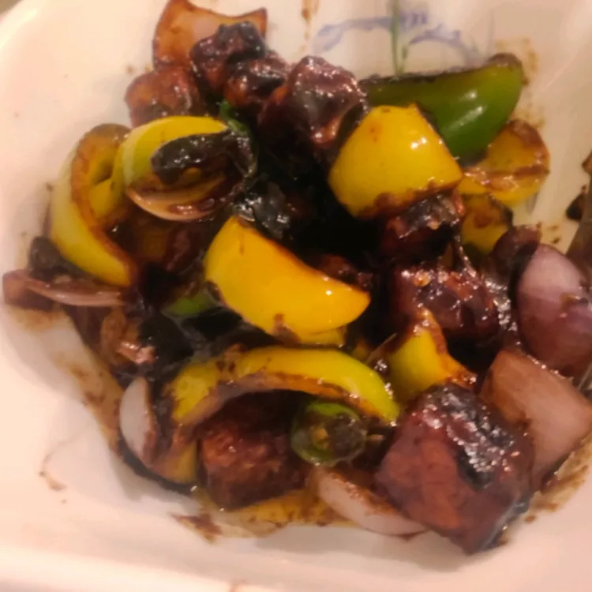

Odin Recipes
Chili Paneer

Description
If you love spicy and savory flavors, this is the dish for you. Chili paneer is an
Indo-Chinese dish featuring chunks of buttery cheese tossed in fresh vegetables and
a spicy gravy.
Ingredients
- 2 cups cubed paneer (Indian cheese curd)
- 1/4 cup cornstarch, or as needed
- 1/4 cup vegetable oil
- 4 cloves garlic, minced
- 1 (1 inch) piece fresh ginger, grated
- 1 onion, chopped
- 4 green chili peppers, halved
- 1 bell pepper, diced
Gravy
- 2 tablespoons soy sauce
- 2 tablespoons chili sauce
- 2 tablespoons tomato sauce
- 1 teaspoon white sugar
- 1/2 teaspoon salt, or to taste
- 2 tablespoons water, or as needed (optional)
- 1/4 cup chopped fresh cilantro, or to taste
- 2 green onions, chopped (optional)
Directions
- Place paneer in a bowl and add enough cornstarch
to coat; mix well.
-
Heat oil in large skillet over medium heat; fry paneer
until golden brown; 1 to 2 minutes per side. Transfer
paneer to a paper towel-lined plate, reserving oil in
the skillet.
-
Combine garlic and ginger in the hot oil; add onion, green
chili peppers, and bell pepper. Cook and stir until vegetables
are golden brown; about 5 minutes.
-
Mix soy sauce, chili sauce, tomato sauce, sugar, salt, and
remaining constarch into onion mixture, stirring in water
if mixture is too thick. Add paneer; cook and stir until
gravy is thickened; 2 to 3 minutes. Remove skillet from
heat and garnish chili with cilantro and green onions.
Cook's Note
- Use tofu instead of paneer for a vegan twist!
- You can make a thick batter of cornstarch using
water and coat paneer pieces with it, if desired.